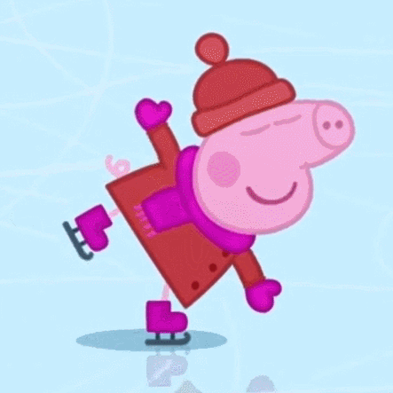

切换导航
江科大苏理工
实验楼
食堂
教学区
坦克
射手
法师
刺客
战士
射手
射手
一般是占用最大的团队资源的位置，需要有强大的击杀能力来终结比赛。
拥有强大的单体输出能力，发育良好的情况下，可以快速击杀坦克英雄，形成收割局面，进而终结团战。
通过前期压制快速推塔，滚出优势。但可能缺乏后期的收割能力导致容易被翻盘，最好在本方其他位置有收割英雄时选择，更为稳妥。
一般等待对手交出关键技能以后切入残局，快速形成连续击杀，进而终结团战。
*选择近战边路来代替射手，可能会引起队友不理解或者战术混乱，有负面士气影响，要慎重考虑。
法师
法师
位于中路，方便支援各路打架，大都具有强大的AOE输出能力
中前期游走打架能力较强的法师，除中路兵线外，还依赖击杀和助攻获取经济
获取足够发育后，具有强大伤害能力的法师。中前期可以尽中单的义务支援战斗，参与地图资源的争夺 但相比支援型法师比较软绵无力
由于版本节奏变动，发育型法师不太容易获取足够资源
发育型法师最好把前几个蓝buff让给打野来支撑节奏
战士
战士
单线发育的边路英雄，承担的功能较多
就是一般说的“能扛能打”的英雄，往往依靠比较高的攻防数值硬刚拼血
但是由于机动性和瞬间爆发力的有短板，无法刺杀后排，大多数情况下只能在前排绞肉 绞肉型上单因为兼具了坦克承受伤害的能力，解放了打野和辅助的选人空间 有位移和瞬间爆发能力，找到机会能单杀C位终结团战的英雄
带线型主要是通过带线牵制拖后期，自己拥有比较强的单挑能力，能拉扯至少2人回防 或者自己拥有全地图支援能力，拉扯一人回防就能起到牵制效果 对团队意识和个人意识要求都很高

回到顶部
回到顶部
回到顶部